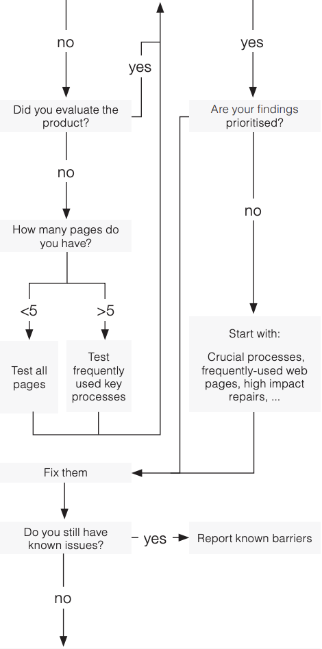

Where to start?
Do you know what your a11y problems are?

- Do you know what your A11Y problems are?
- No
- Did you evaluate the product?
- No
- How many pages do you have?
- Less than 5: Test all pages.
- More than 5: Test frequently used key processes.
- Yes
- Are your findings prioritised?
- No: Start with crucial processes, frequently-used web pages, high impact repairs, etc.
- Yes: Fix them.
- Yes
- Are your findings prioritised?
- No: Start with crucial processes, frequently-used web pages, high impact repairs, etc.
- Yes: Fix them.
- Fix them.
- Do you still have known issues?
- Yes: Report known barriers.
- No: There is no 100% compliance with A11Y guidelines. But always aim as high as possible.
There is no 100% compliance with A11Y - guidelines. But always aim as high as possible